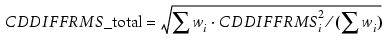

Optimizes optical, resist, and etch parameters.
modelflow_v2
{Input Arguments}
[ Output Arguments ]
[ Stage 1 Optimization Run Modes ]
[ Stage 1 Optimization Parameters ]
[ Stage 2 Resist Model Tuning Parameters ]
[ Stage 2 Optimization Parameters ]
[ Stage 3 Etch Model Tuning Options ]
[ Stage 3 Optimization Parameters ]modelflow_v2 {-m gds | -l layout}
{-gf gaugefile | -sgf supergaugefile}
[-heightsgf file [-heightweight value] [-heightznum value]]
[-jogtolerance integer]
[-f setup | -mlfile filename | -mlstring string]
[{-cli clifile | -clistring clistring} [–ccalweight value]]
[-turbo | –remotefile file | –remotestring string]
[-foptions parallel]
[-ftolerance normtol]
[-cachenumber]
[-cache {ignore | use | clear}]
[-cacheload dir]
[-frontlogfile filename]
[-anchor {gauge_name |gauge_number} [gauge_set]]
[-noNyquist]
[-objective setting ]
[-inputextraclip {value | auto}]
[-srafcalbyweight]
[-sraferrweight value]
[-srafgaugeweight value]
[-srafbotplane value]
[output
[log {logfile | stdout}]
[ddm file] [skipddminlog] [skiptmainlog]
[flare file]
[optical file] [opticalmod dir]
[opticalN file] [opticalmodN dir] (N = 2, 3)
[lithomodel dir]
[cutline file]
[gfout file]
[heightsgfout file]
[interpolated_ddm file]
[stage1resist file]
[finalresist file]
[pwstat]
[mask file] [maskN file] (N = 2, 3)
[etch file]
[setup file | mlfile file]
[topo file]
[unresolved]
[comprehensivetable file]
[srafprintinfo]
[srafprinttable file]
[cache dir]
[marginal integer] [marginalstddev integer]
[marginalabsolute integer] [marginalrelative integer]
[marginalthstab integer] [airesistcutline gauge_id]
[comment string]
]
[stage1
[spatialtcc] [{thresholdstability | thresholdtolerance} value]
[dense]
[fastfocus [value1 value2 value3]]
[fasttopo value]
[topoiterations value]
[topolimits_linear lower_limit upper_limit]
[topolimits_quadratic lower_limit upper_limit]
[topo_ftermrange lower_limit upper_limit]
[topo_fwtermrange lower_limit upper_limit]
[topo_gtermrange lower_limit upper_limit]
[topo_itermrange lower_limit upper_limit]
[topo_stermrange lower_limit upper_limit]
[topo_stermimrange lower_limit upper_limit]
[topo_ttermrange lower_limit upper_limit]
[topo_ttermimrange lower_limit upper_limit]
[topo_t2termrange lower_limit upper_limit]
[topo_t4termrange lower_limit upper_limit]
[topo_vtermrange lower_limit upper_limit]
[topo_freezeterms topo_terms_group]
[search {full | gradient | newton | front | zoom | frontzoom}
[explore integer | runtime hours]
[totaliteration integer | totalruntime value]
[epsilon value]]
[threshold {auto | optimize | fixed_threshold | optim_set}]
[apodization_loss optim_set]
[asml_quadrant optim_set]
[adjust_bossung [maxRMS [minCDswing [tol]]]
[simulated [inputfc [maxdef [numdef]]]]
[beamfocus optim_set] [beamfocus_ex2 optim_set]
[beamfocus_ex3 optim_set]
[blurenergy optim_set][blurlength optim_set]
[ddmgroupparamM optim_set] (M = 0, …, 4)
[def_start optim_set] [def_start_ex2 optim_set]
[def_start_ex3 optim_set]
[dillumangle optim_set] [dillumangle1 optim_set]
[dillumangle2 optim_set]
[dradius optim_set]
[dsigma_in optim_set] [dsigma_in1 optim_set] [dsigma_in2 optim_set]
[dsigma_out optim_set] [dsigma_out1 optim_set]
[dsigma_out2 optim_set]
[edge_transmission optim_set]
[edge_transmission_exN optim_set] (N=2,3)
[fb_gauss_sigma optim_set] [fb_lorentz_gamma optim_set]
[fb_lorentz_n optim_set] [fb_rectangle_width optim_set]
[filmstackN_thickM optim_set] (N=1,2,3, M=1,…,5)
[filmstackN_thickM_exL optim_set] (N=1,2,3,M=1,…,5, L=2,3)
[flare optim_set]
[illumangle optim_set] [illumangle1 optim_set]
[illumangle2 optim_set]
[imagediffusion optim_set]
[imagediffusion_ex2 optim_set][imagediffusion_ex3 optim_set]
[imagediffusionw1 optim_set imagediffusions1 optim_set
imagediffusions2 optim_set]
[kerneldiffusion optim_set]
[kernel_sigmaN optim_set]
[kernel_scaleN optim_set]
[kernel_rad_inN optim_set] [kernel_rad_outN optim_set]
[kernel_sigmaN_ex2 optim_set]
[kernel_scaleN_ex2 optim_set]
[kernel_rad_inN_ex2 optim_set][kernel_rad_outN_ex2 optim_set]
[kernel_sigmaN_ex3 optim_set]
[kernel_scaleN_ex3 optim_set][kernel_rad_inN_ex3 optim_set]
[kernel_rad_outN_ex3 optim_set]
[transmission_realN_exM optim_set]
[layer_transmission_realN_exM integer]
[linear optim_set] [linear_direction optim_set]
[linearx optim_set][lineary optim_set]
[lossless_pt optim_set]
[lossless_pt_exN optim_set] (N=2,3)
[mask_model_layerM_cc optim_set] (M = 0,…,4)
[mask_model_layerM_cx optim_set][mask_model_layerM_bias optim_set]
[mask_model_layerM_xbias optim_set]
[mask_model_layerM_ybias optim_set]
[mask_model_layerM_cc_exN optim_set] (M = 0,…,4, N = 2, 3)
[mask_model_layerM_cx_exN optim_set]
[mask_model_layerM_bias_exN optim_set]
[mask_model_layerM_xbias_exN optim_set]
[mask_model_layerM_ybias_exN optim_set]
[na optim_set] [na_exN optim_set] (where N= 2, 3)
[num_planes optim_set]
[radius optim_set]
[rotangle optim_set] [rotangle1 optim_set] [rotangle2 optim_set]
[sigma_cntr optim_set]
[sigma_in optim_set] [sigma_in_exN optim_set] (where N=2, 3)
[sigma_in1 optim_set] [sigma_in2 optim_set]
[sigma_out optim_set] [sigma_out_exN optim_set] (where N=2, 3)
[sigma_out1 optim_set] [sigma_out2 optim_set]
[sraf_bot_plane optim_set] [sraf_top_plane optim_set]
[stack_weight_exN optim_set] (N can vary from 1 to 12)
[te optim_set] [tis optim_set] [tm optim_set]
[topo_cterm_N optim_set] (N can vary from 0 to 7)
[topo_csigma optim_set]
[topo_c2term_N optim_set] (N can vary from 0 to 7)
[topo_c2sigma optim_set]
[topo_cquadratic_mult optim_set]
[topo_dupsize optim_set]
[topo_fasym optim_set]
[topo_fsigma optim_set]
[topo_fterm_N optim_set] (N can vary from 0 to 7)
[topo_fwasym optim_set]
[topo_fwsigma optim_set]
[topo_fwterm_N optim_set] (N can vary from 0 to 7)
[topo_fwupsize optim_set]
[topo_gterm_N optim_set] (N can vary from 0 to 7)
[topo_gsigma optim_set]
[topo_iterm_N optim_set] (N can vary from 0 to 7)
[topo_isigma optim_set]
[topo_obiasinit optim_set] [topo_obiaswsat optim_set]
[topo_obiasmax optim_set]
[topo_oterm_N optim_set] (N can vary from 0 to 2)
[topo_sterm_N optim_set] (N can vary from 0 to 7)
[topo_sssigma optim_set]
[topo_s2term_N optim_set] (N can vary from 0 to 7)
[topo_s2sigma optim_set]
[topo_squadratic_mult optim_set]
[topo_tterm_N optim_set] (N can vary from 0 to 7)
[topo_vterm_N optim_set]
[topo_vsigma optim_set]
[topo_vsize optim_set]
[topomf string
Topographical Modelform Parameters (topomf)
]
[ka optim_set]
[kf optim_set]
[balance optim_set]
[flare_s1 optim_set]
[flare_s2 optim_set]
[unpolarized optim_set]
[vd_length optim_set] [vd_top_adiabatic optim_set]
[vd_top_c optim_set] [vd_top_shrink_a optim_set]
[vd_top_shrink_l optim_set] [vd_top_surfc_a optim_set]
[vd_top_surfc_l optim_set] [vd_bot_surfc_a optim_set]
[vd_bot_surfc_l optim_set] [vd_top_scale_a optim_set]
[vd_top_scale_l optim_set] [vd_bot_scale_a optim_set]
[vd_bot_scale_l optim_set]
[zn optim_set](n=1,4,5,9,12,16,17,21,25,28,32,36,41,45,49,56,60,64)
]
[stage2off | stage2
[try] [brelative] [dense] [horizontal | horizontaloff] [nolp]
[snap2fftoff] [extentoff] [useevalcache]
[search {full | gradient | newton | front | zoom | frontzoom}
[airesistdifference] [explore integer | runtime value]
[{maxlinear value} | {maxaidiff value [loose | stable]}]
[{thresholdstability | thresholdtolerance} value]
[totaliteration integer | totalruntime value]
[epsilon value]
[{cm1mf {integer | nominal}
[sinterval {auto | value} {auto | value}]
[binterval {auto | value} {auto | value}]}
(or)
[bn optim_set]
[sm optim_set]
(or)
[shrink_radiusj optim_set] [shrink_thresholdj optim_set]
[shrink_diffusionk optim_set]
[sem_shrink_ak optim_set][sem_shrink_bk optim_set]
[sem_shrink_rk optim_set][sem_shrink_sk optim_set] (k=0,1,2)
[hbias_aj optim_set] [hbias_bj optim_set]
[hbias_dj optim_set][hbias_sj optim_set]
[swbias_t optim_set] [swbias_b optim_set]
[swbias_d optim_set] [swbias_s optim_set]
[vshrink_u optim_set] [vshrink_v optim_set]
[vshrink_l optim_set] [vshrink_t optim_set]
[vshrink_d optim_set] [vshrink_s optim_set]
[zslope_a optim_set] [zslope_b optim_set] [zslope_c optim_set]
]
]
]
[stage3 [try |
[biasing_type {0|1|[cdtol] | auto [cdtol]
[{selective_biasing_type1 filter_layer_number}|
{structs_biasing_type1 struct_list}]}]
[etch_underlying veb_underlying_index layer_number]
[fit {relative | absolute}]
[inputlayer [integer] [cli]]
[search {full | gradient | newton | front | zoom | frontzoom}
[explore integer ] [totaliteration integer | totalruntime value]
[epsilon value]
[ {vebmf {integer | nominal}
[esinterval {auto | value} {auto | value}]
[uinterval {auto | value} {auto | value}] }
(or)
[un optim_set]
[esm optim_set]
]
]
]Use the input section arguments to define input files and settings for the modelflow_v2 command. For syntax, see “modelflow_v2: Input Section Arguments”.
Use the output arguments to define output files, directories, and settings. For syntax, see “modelflow_v2: Output Arguments”.
The Stage 1 optical model tuning options topic describes the build and optimize modes. For descriptions and syntax, see “modelflow_v2: Stage 1 Optical Model Tuning Options”.
Use the Stage 1 optimization run modes to define optical model optimization settings. For syntax, see “modelflow_v2: Stage 1 Optimization Run Modes”.
Use the Stage 1 optimization parameters to define optical model parameters and ranges for optimization. For syntax, see “modelflow_v2: Stage 1 Optimization Parameters”.
Use the Stage 2 resist model tuning parameters to define resist model optimization settings. For syntax, see “modelflow_v2: Stage 2 Resist Model Tuning Parameters”.
Use the Stage 2 optimization parameters to define resist model parameters and ranges for optimization. For syntax, see “modelflow_v2: Stage 2 Optimization Parameters”.
Use the Stage 3 etch model tuning options to define to define etch model optimization settings. For syntax, see “modelflow_v2: Stage 3 Etch Model Tuning Options”.
Use the Stage 3 optimization parameters to define etch model parameters and ranges for optimization. For syntax, see “modelflow_v2: Stage 3 Optimization Parameters”.
The main purpose of this feature is to build more robust and stable optical and resist models. Process window (PW) Calibration is conducted over gauge data collected for several process conditions. A process condition is characterized by two parameters – defocus and dose.
Specifies an offset from the best focus value in um. In simulations, this quantity is added to (or subtracted from) the beamfocus value.
If beamfocus is not present in the nominal optical model (such as for scalar models), defocus is added to the def_start (defocus start) parameter. You should supply a beamfocus value whenever possible.
Specifies a dimensionless quantity that is given by the ratio of the dose value associated with a particular process condition to the best dose value, where the best dose is considered to have a scaled value of 1.0.
In simulations, this parameter is mapped to the dose value of the first mask from the OPCpro setup file, i.e., the true dose value associated with a given process condition is calculated as the product of the gauge file dose parameter and the dose value from the OPCpro setup file.
A general recommendation is to collect data for at least four process conditions – for two defocus and two dose values. Both parameters can be sampled in an arbitrary manner; it is not necessary to use fixed increments or cover all corners of the process window. Each process window sampling is represented by a gauge file which is characterized by defocus, dose, and weight. Different .ss files associated with a given process window are concatenated into one super gauge file which is passed to the modelflow_v2 command using the –sgf option:
modelflow_v2 ... -sgf supergaugefileAll gauge files entering a given super gauge file can have different numbers of data lines with CDs sampled at different locations; sample locations can vary from one gauge file to another. However, all locations have to be from the same GDS file.
The optimization objective remains the same – CD DIFF RMS. For multiple gauge files, we calculate a combined CD DIFF RMS as a weighted geometrical average over all gauge files:

where CDDIFFRMS_total is the total CD DIFF RMS (the value of the objective function to be optimized) and where wi and CDDIFFRMS are the weight and the CD DIFF RMS of the i-th gaugefile, respectively.
RMS values per gaugefile are reported into the modelflow log file.
The defocus parameter is added either to beamfocus or to def_start, corresponding to the type of the nominal model.
When optical models for each process condition are not available (you only have a single optical model), do not optimize beamfocus; instead, start by setting beamfocus to the top of the resist and adjust if needed.
The dose parameter is set using the setup file dose value at the start of the calibration process. Although during optical model optimization modelflow_v2 varies the CTR threshold, it does not directly affect the dose settings. Optimizing for a CTR model is equivalent to a search for the best dose value with no explicit variation of the dose parameter.
See “Calibration Procedure Examples” section of Examples for more information.
CTR - Constant Threshold Resist Model of type CM1.
nominal optical, resist, and etch models are the initial models specified in the setup file.
optim_set - Defined as one of the optimization expressions as described in Using the Independent, Constrained, and Dependent Optimization Parameters of “modelflow_v2: Stage 1 Optimization Run Modes”.
The following examples show different types of constraints.
The following set of commands:
. . .
stage1 search full \
sigma_out 0.6 0.8 3\
sigma_in = {$sigma_out - 0.2} 0.4 0.55 \
stage2 \
. . . means that a one-dimensional full factorial search is used to tune sigma_out, while the other optimization parameter is determined during this search from the relationship:
sigma_in = sigma_out - 0.2If the value of a dependent parameter appears to be out of the search interval, this parameter will be set to the nearest (either begin or end) boundary value. In the above example, for sigma_out = 0.8, sigma_in = 0.55 will be used instead of sigma_in = 0.6, even though it would have been the result of the Tcl expression.
The following set of commands:
stage 3 search front explore 501 \
es1 35 100 5 u1 < {$es1} 0 100 7 \
es2 >= {$u2} 35 100 5 u2 0 100 3means that during stage 3 optimization, only etch models that satisfy the inequality constraints u1 < es1 and es2 > u2 will be considered as a possible solution.
The following command:
stage 3 search front explore 501 \
es1 35 100 5 u1 mod< {$es1} 0 100 7 is the equivalent of using the double inequality constant:
-es1 < u1 < es1The following example shows how to calibrate the concave and convex parameters for two layers, a main(0) and an SRAF(1) layer, where the same behavior is required on both layers. The concave parameters are abbreviated “cc” and calibrated using the parameter mask_model_layerN_cc, with N=0 to 4. The convex parameters are abbreviated “cx” and calibrated using mask_model_layerN_cx, with N=0 to 4.
In this case, the SRAF layer is set as a dependent parameter for the main layer:
mask_model_layer0_cx 0 0.02 20 \
mask_model_layer0_cc 0 0.02 20 \
mask_model_layer1_cx = {$mask_model_layer0_cx} 0 0.02 \
mask_model_layer1_cc = {$mask_model_layer0_cc} 0 0.02
...Similarly, the following code sets cx=cc for two layers:
mask_model_layer0_cx 0 0.02 20 \
mask_model_layer0_cc = {$mask_model_layer0_cx} 0 0.02 \
mask_model_layer1_cx = {$mask_model_layer0_cx} 0 0.02 \
mask_model_layer1_cc = {$mask_model_layer0_cx} 0 0.02
...In this example, we calculate the CD Error RMS using nominal optical and resist model (none of the optimization stages are used; in CM1 Center, this is the equivalent of the Try mode). Also, we use previously generated aerial image grids residing in the “grid_dir” folder and a simulation pixel size of 0.02 um. The resulting gauge data with simulated CD and space measurements is dumped to the specified file (“gauges_sim.gg”).
modelflow_v2 \
-f setup.in \
-m tp.gds \
-gf gauges.gg \
-cacheload grid_dir \
output \
log out.log \
gfout gauges_sim.ggIn this example, we tune the threshold parameter of a CTR model obtained by converting the input CM1 model.
modelflow_v2 \
-f setup.in \
-m tp.oas \
-gf gauges.gg \
output \
log out.log \
stage1 \
threshold autoIn stage1 of this example, you tune optical (na) and CTR (threshold) parameters using a full factorial search.
modelflow_v2 \
-f setup.in \
-m tp.gds \
-gf gauges.gg \
output \
log out.log \
cache grid_dir \
stage1 \
search full \
na 0.55 0.7 4 \
threshold 0.2 0.4 21 \In this example, you fit only linear parameters of the input resist model while the rest of the resist parameters are kept fixed at their nominal values (no optimization parameter is specified after stage2 or stage3). The command uses the previously generated aerial image grids found in the folder grid_dir for its calculations.
modelflow_v2 \
-f setup.in \
-m tp.gds \
-gf gauges.gg \
-cacheload grid_dir \
output \
log out.log \
gfout gauges_sim.gg \
stage2Note that this code can be used for the etch model by replacing stage2 with stage3 in the example code above, or both the CM1 resist and etch models by specifying both. This is the equivalent of selecting one (or both) of the CM1 or VEB stages in the CM1 Center Optimize tab and using Build mode.
In stage 2 of this example, you use a multi-threaded gradient search to tune the base concentration and diffusion length parameters entering the CM1 nominal model. Only two of these five parameters are independent. Accordingly, gradient search will be performed in a two-dimensional space (b1,s2), while the rest of the optimization parameters will be evaluated using the specified linear constraints, namely: 1 and s3 = s2 - 10.
modelflow_v2 \
-f setup.in \
-m tp.oas \
-gf gauges.gg \
-turbo \
output \
log out.log \
stage2 \
search gradient \
b1 0.1 0.4 4 \
b2 = 0.1 0.1 0.4 \
b3 = 0.1 0.1 0.4 \
s2 40 100 7 \
s3 = {$s2 - 10} 30 90This is equivalent to selecting CM1 for optimization in CM1 Center.
In stage 3 of this example, you use a multi-threaded (–turbo) newton search with 10 exploration runs and an epsilon value of 0.005 to tune the shift and diffusion length parameters of the first two kernels entering the input etch model.
modelflow_v2 \
-f setup.in \
-m tp.oas \
-gf gauges.gg \
-turbo \
output \
log out.log \
stage3 \
search newton \
explore 10 epsilon 0.005 \
u1 -20 20 3 \
u2 = {$u1} -20 20 \
es2 100 300 5 \
es3 = {$es2} 100 300This is equivalent to selecting VEB for optimization in CM1 Center.
In stage 3 of this example, you tune the etch model using the resist contours on the input layer 11 and dump the appropriate comment to the file.
#----------
set txt “inputlayer 11 was generated using DensePI\n and
setup.in with the veb model commented out"
#===== run optimization
modelflow_v2 \
-mlfile input.mli \
-m tp.oas \
-sgf gauge.sgd \
output \
log out.log \
comment $txt \
stage3 inputlayer l1 \
search front runtime 0.2 \
es1 0 100 1 u1 0 30 1Double exposure models require additional data to calibrate models. The following example code shows how to set a common value for both models; the imagediffusion_ex2 parameter is constrained to be the same value as the imagediffusion parameter.
modelflow_v2 \
-l $L \
-sgf test_mfv2_lo.log \
output \
log test_mfv2_lo.log \
optical test_mfv2_oo.opt \
stage1 \
threshold auto \
search front \
explore 50 \
epsilon 0.001 \
imagediffusion 0.0 0.04 5 \
imagediffusion_ex2 = {$imagediffusion} 0.0 0.04 \
stage2 ...Double exposure lithography users should consider the modelflow_v2 arguments shown in Table 1 in calibration runs:
Parameter |
First or Second Exposure? |
Notes |
|---|---|---|
beamfocus def_start |
First |
Sets the focus variables for the first optical model. |
beamfocus_ex2 def_start_ex2 |
Second |
Sets the focus variables for the second optical model. |
imagediffusion imagediffusion_ex2 |
First Second |
Sets the imagediffusion characteristics of the optical model. imagediffusion should be equal to imagediffusion_ex2, as shown above. |
-optical2 |
Second |
Names the second optical model output. |
-opticalmod2 |
Second |
Names the second optical model output directory. |